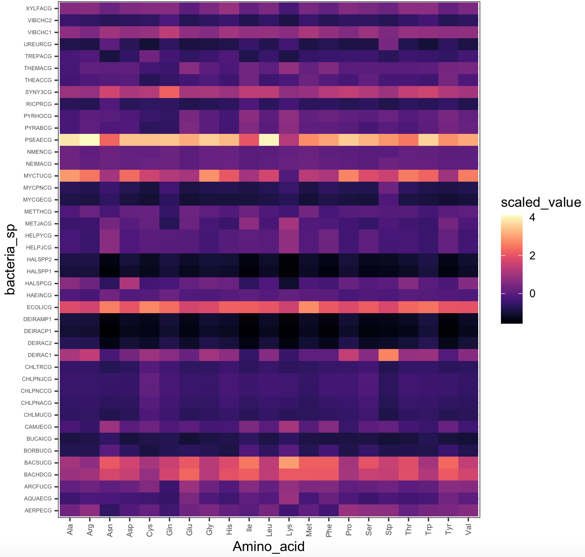

Session 9 – Graphics in R – ggplot2
Plots, graphs and other visual representations are central for any visualization of data, many statistical results and simplification of complex data. The preloaded graphics package of R helps the easy access plots, bar charts, boxplots and other. However, with the development of the ggplot2 package that is part of the tidyverse collection. This package and its growing collection of add-ons, which include at least 81, has made ggplot2 a dominant, flexible, and beautiful R graphics package. Therefore, we will explore graphics in R using this package.
Like most visualizations, it would be ideal to start with installing ggplot2 and datasets that will serve as examples.
1) If you have not installed ggplot2, you should follow these instructions before we explore graphics and plots.
install.packages("ggplot2")
library(ggplot2)9.1 Preparing dataset for plot
2) We also need some reference datasets to use and plot for our graphics. We will use cars and the airway_scaledcounts.csv datasets.
## we will load 'ade4' package to get the bacteria dataset
library(ade4)
data(bacteria)
## we get the espaa dataframe with number of the 21 amino acids present in 43 species of bacteria
bacteria_espaa <- bacteria$espaaWe then scale this dataset using the function modify() from the package purrr.
# load purrr package and scale the values
require(purrr)
bacteria_espaa_scaled <- purrr::modify(bacteria_espaa, scale)
head(bacteria_espaa_scaled)
# Ala Arg Asn Asp Cys Gln Glu Gly His Ile Leu
#AERPECG 0.3285668 0.7317790 -0.57189998 -0.1194444 0.1648422 -0.3942439 0.2871196 0.4766228 0.1461376 -0.04383607 0.39172834
#AQUAECG -0.4008694 -0.2034641 -0.22356528 -0.3025407 -0.3950725 -0.5262848 0.4634441 -0.1820602 -0.3947798 0.06415029 -0.09928685
#ARCFUCG 0.1073331 0.2833748 0.04401802 0.2066524 0.5498823 -0.4297732 0.8885965 0.2463444 -0.1330163 0.57892747 0.12987680
#BACHDCG 0.9012986 0.9875656 1.72105862 1.5171379 0.8224654 1.6598743 2.2634710 1.2984007 1.9400648 2.16751418 1.40433248
#BACSUCG 1.0314722 0.7271505 2.09337260 1.6457327 1.0718724 1.5394241 2.0612524 1.3252195 1.8173099 2.49733951 1.38291228
#BORBUCG -0.7597170 -0.7465478 0.01654507 -0.6016028 -0.9081081 -0.7293261 -0.6491864 -0.7234675 -0.8524967 -0.18035597 -0.60867882
# Lys Met Phe Pro Ser Stp Thr Trp Tyr Val
#AERPECG -0.36413421 0.09017282 -0.3275198 0.89114307 0.7319805 0.7113529 0.152094962 0.38406553 0.4369524 0.61086466
#AQUAECG 0.88477099 -0.28951403 0.1851469 -0.17796712 -0.4145196 -0.2123879 -0.323609531 -0.26598780 0.3076040 0.01812197
#ARCFUCG 0.79679827 0.48462587 0.5156315 0.08558657 0.1583118 0.2768920 0.008319353 0.09800132 0.6381195 0.61451548
#BACHDCG 2.08829038 2.07351272 2.0439218 1.06116153 1.5330792 1.4796369 1.887894271 1.20439921 2.0999898 1.67959246
#BACSUCG 2.95243158 2.18339064 2.1725251 1.03849240 1.9769142 1.5369105 1.887693467 1.04854940 2.2918176 1.46336710
#BORBUCG -0.02590849 -0.72066544 -0.3193467 -0.80668435 -0.5156512 -0.7990328 -0.785609156 -0.79075009 -0.4463524 -0.78199455We can also create a more easy to map plot with using the function melt() of the package reshape2.
## load reshape
library(reshape2)
# use melt() to transform
bacteria_espaa_for_heatmap <- melt(as.matrix(bacteria_espaa_scaled))
# transform factor variables to character
factor_columns <- sapply(bacteria_espaa_for_heatmap, is.factor)
bacteria_espaa_for_heatmap[factor_columns] <- lapply(bacteria_espaa_for_heatmap[factor_columns], as.character)
## we can rename the columns in this data frame
names(bacteria_espaa_for_heatmap) <- c("bacteria_sp", "Amino_acid", "scaled_value")
head(bacteria_espaa_for_heatmap)
# bacteria_sp Amino_acid scaled_value
#1 AERPECG Ala 0.3285668
#2 AQUAECG Ala -0.4008694
#3 ARCFUCG Ala 0.1073331
#4 BACHDCG Ala 0.9012986
#5 BACSUCG Ala 1.0314722
#6 BORBUCG Ala -0.75971703) A more complex dataset for color schemes, we will use the airway_scaledcounts.csv that has expression analysis data for several RNAseq experiments. This dataset is in our class GitHub repository.
## remeber to update the path to file with the datset where you downloaded in your computer -- THIS IS EXCLUSIVE FOR YOUR COMPUTER
## load get 'airway_scaledcounts.csv' dataset
airway_data <- read.table("~/Desktop/Teach_R/class_pages_reference/bioinformatics_gitbook_1/my_working_directory/airway_scaledcounts.csv",
header = TRUE, sep = ",", stringsAsFactors = FALSE)
head(airway_data)
# ensgene SRR1039508 SRR1039509 SRR1039512 SRR1039513 SRR1039516 SRR1039517 SRR1039520 SRR1039521
#1 ENSG00000000003 723 486 904 445 1170 1097 806 604
#2 ENSG00000000005 0 0 0 0 0 0 0 0
#3 ENSG00000000419 467 523 616 371 582 781 417 509
#4 ENSG00000000457 347 258 364 237 318 447 330 324
#5 ENSG00000000460 96 81 73 66 118 94 102 74
#6 ENSG00000000938 0 0 1 0 2 0 0 0
str(airway_data)
#'data.frame': 38694 obs. of 9 variables:
# $ ensgene : chr "ENSG00000000003" "ENSG00000000005" "ENSG00000000419" "ENSG00000000457" ...
# $ SRR1039508: num 723 0 467 347 96 ...
# $ SRR1039509: num 486 0 523 258 81 ...
# $ SRR1039512: num 904 0 616 364 73 1 6000 2640 692 531 ...
# $ SRR1039513: num 445 0 371 237 66 ...
# $ SRR1039516: num 1170 0 582 318 118 ...
# $ SRR1039517: num 1097 0 781 447 94 ...
# $ SRR1039520: num 806 0 417 330 102 ...
# $ SRR1039521: num 604 0 509 324 74 ...We then scale this dataset using the function modify() from the package purrr. We needed to remove and add again the names of the genes in column ensgene.
ensgene <- airway_data[,1]
airway_data_numeric <- airway_data[,-1]
# load purrr package
require(purrr)
airway_data_scaled <- purrr::modify(airway_data_numeric, scale)
# cbind the name of the genes from vector 'ensgene'
airway_data_scaled <- cbind(ensgene, airway_data_scaled, stringsAsFactors = FALSE)
head(airway_data_scaled)
# ensgene SRR1039508 SRR1039509 SRR1039512 SRR1039513 SRR1039516 SRR1039517 SRR1039520 SRR1039521
#1 ENSG00000000003 0.03933056 -0.003924270 0.036555187 0.011021618 0.09101424 0.041361372 0.06313763 0.007896859
#2 ENSG00000000005 -0.12176875 -0.130284028 -0.106887175 -0.112547703 -0.11339060 -0.123910392 -0.10822243 -0.116658738
#3 ENSG00000000419 -0.01771152 0.005695712 -0.009143265 -0.009526988 -0.01171230 -0.006246538 -0.01956592 -0.011693839
#4 ENSG00000000457 -0.04444999 -0.063204156 -0.049129410 -0.046736626 -0.05783441 -0.056566291 -0.03806261 -0.049844146
#5 ENSG00000000460 -0.10037797 -0.109224069 -0.095303887 -0.094220568 -0.09277541 -0.109748545 -0.08653667 -0.101398615
#6 ENSG00000000938 -0.12176875 -0.130284028 -0.106728500 -0.112547703 -0.11304119 -0.123910392 -0.10822243 -0.116658738We can also create a more easy to map plot with using the function melt() of the package reshape2.
## load reshape
library(reshape2)
# prepare other data frame
airway_data_scaled2 <- purrr::modify(airway_data_numeric, scale)
# add ensgene as rownames
rownames(airway_data_scaled2) <- ensgene
head(airway_data_scaled2)
# SRR1039508 SRR1039509 SRR1039512 SRR1039513 SRR1039516 SRR1039517 SRR1039520 SRR1039521
#ENSG00000000003 0.03933056 -0.003924270 0.036555187 0.011021618 0.09101424 0.041361372 0.06313763 0.007896859
#ENSG00000000005 -0.12176875 -0.130284028 -0.106887175 -0.112547703 -0.11339060 -0.123910392 -0.10822243 -0.116658738
#ENSG00000000419 -0.01771152 0.005695712 -0.009143265 -0.009526988 -0.01171230 -0.006246538 -0.01956592 -0.011693839
#ENSG00000000457 -0.04444999 -0.063204156 -0.049129410 -0.046736626 -0.05783441 -0.056566291 -0.03806261 -0.049844146
#ENSG00000000460 -0.10037797 -0.109224069 -0.095303887 -0.094220568 -0.09277541 -0.109748545 -0.08653667 -0.101398615
#ENSG00000000938 -0.12176875 -0.130284028 -0.106728500 -0.112547703 -0.11304119 -0.123910392 -0.10822243 -0.116658738
## get matrix dimensions
dim(airway_data_scaled2)
#[1] 38694 8As indicated by the output of the function dim() this is a very large matrix (38,694 rows). This is a huge table, however most genes will have similar levels of expression across SRR samples. We will search for the ensgenes that have the most dispersion around the mean expression by estimating the coefficient of variation CV. This statistic represents the ratio of the standard deviation to the mean. Then, we will extract those ensgenes with the 100 highest values.
## Create a function to valculate coefficient of variation
co.var <- function(x) ( 100*sd(x)/mean(x) )
## we estimate row-wise coefficient of variation
airway_data_scaled2$coVar<-apply(airway_data_scaled2[,names(airway_data_scaled2)],1,co.var)
head(airway_data_scaled2)
# SRR1039508 SRR1039509 SRR1039512 SRR1039513 SRR1039516 SRR1039517 SRR1039520 SRR1039521 coVar
#ENSG00000000003 0.03933056 -0.003924270 0.036555187 0.011021618 0.09101424 0.041361372 0.06313763 0.007896859 87.129966
#ENSG00000000005 -0.12176875 -0.130284028 -0.106887175 -0.112547703 -0.11339060 -0.123910392 -0.10822243 -0.116658738 -6.935013
#ENSG00000000419 -0.01771152 0.005695712 -0.009143265 -0.009526988 -0.01171230 -0.006246538 -0.01956592 -0.011693839 -77.383502
#ENSG00000000457 -0.04444999 -0.063204156 -0.049129410 -0.046736626 -0.05783441 -0.056566291 -0.03806261 -0.049844146 -15.968492
#ENSG00000000460 -0.10037797 -0.109224069 -0.095303887 -0.094220568 -0.09277541 -0.109748545 -0.08653667 -0.101398615 -8.191639
#ENSG00000000938 -0.12176875 -0.130284028 -0.106728500 -0.112547703 -0.11304119 -0.123910392 -0.10822243 -0.116658738 -6.980658
## descresing order by coVar
airway_data_scaled2_order <- airway_data_scaled2[order(airway_data_scaled2$coVar, decreasing = TRUE),]
head(airway_data_scaled2_order)
# SRR1039508 SRR1039509 SRR1039512 SRR1039513 SRR1039516 SRR1039517 SRR1039520 SRR1039521 coVar
#ENSG00000126709 0.0313090216 -0.0005442761 -0.006445787 0.049897360 -0.012760526 -0.030050493 -0.019778529 -0.011075185 39115.82
#ENSG00000278270 0.1077364958 0.1148955034 -0.015648947 -0.035906955 -0.042285668 -0.052950501 -0.036574367 -0.037471074 30921.30
#ENSG00000041802 -0.0043422784 0.0150556941 -0.007239162 -0.015080665 0.012746403 0.017406759 -0.008723041 -0.009425442 25810.60
#ENSG00000086712 -0.0116953590 0.0098557040 -0.021678604 -0.008138569 0.004535268 -0.034570232 0.038475388 0.023981854 25111.84
#ENSG00000188603 -0.0001086865 0.0116757006 -0.020567877 0.002413418 -0.009441131 -0.004739959 -0.004258325 0.025631597 18384.05
#ENSG00000125398 0.0698569896 -0.0096442587 0.058928387 -0.045348207 -0.017652265 -0.093326829 0.090138534 -0.049637928 15830.54
## retain the first 100 genes
airway_data_scaled_red <- airway_data_scaled2_order[1:100,]
## remove sd column
airway_data_scaled_red <- airway_data_scaled_red[,-length(airway_data_scaled_red)]
head(airway_data_scaled_red)
# SRR1039508 SRR1039509 SRR1039512 SRR1039513 SRR1039516 SRR1039517 SRR1039520 SRR1039521
#ENSG00000126709 0.0313090216 -0.0005442761 -0.006445787 0.049897360 -0.012760526 -0.030050493 -0.019778529 -0.011075185
#ENSG00000278270 0.1077364958 0.1148955034 -0.015648947 -0.035906955 -0.042285668 -0.052950501 -0.036574367 -0.037471074
#ENSG00000041802 -0.0043422784 0.0150556941 -0.007239162 -0.015080665 0.012746403 0.017406759 -0.008723041 -0.009425442
#ENSG00000086712 -0.0116953590 0.0098557040 -0.021678604 -0.008138569 0.004535268 -0.034570232 0.038475388 0.023981854
#ENSG00000188603 -0.0001086865 0.0116757006 -0.020567877 0.002413418 -0.009441131 -0.004739959 -0.004258325 0.025631597
#ENSG00000125398 0.0698569896 -0.0096442587 0.058928387 -0.045348207 -0.017652265 -0.093326829 0.090138534 -0.049637928
## get dimensions
dim(airway_data_scaled_red)
#[1] 100 8With this reduced matrix, we can use melt() to creae a heatmap amenable data frame.
airway_data_for_heatmap <- melt(as.matrix(airway_data_scaled_red))
# transform factor variables to character
factor_columns <- sapply(airway_data_for_heatmap, is.factor)
airway_data_for_heatmap[factor_columns] <- lapply(airway_data_for_heatmap[factor_columns], as.character)
str(airway_data_for_heatmap)
#'data.frame': 800 obs. of 3 variables:
# $ Var1 : chr "ENSG00000126709" "ENSG00000278270" "ENSG00000041802" "ENSG00000086712" ...
# $ Var2 : chr "SRR1039508" "SRR1039508" "SRR1039508" "SRR1039508" ...
# $ value: num 0.031309 0.107736 -0.004342 -0.011695 -0.000109 ...
## we can rename the columns in this data frame
names(airway_data_for_heatmap) <- c("ensgene", "SRR", "expression")
head(airway_data_for_heatmap)
# ensgene SRR expression
#1 ENSG00000126709 SRR1039508 0.0313090216
#2 ENSG00000278270 SRR1039508 0.1077364958
#3 ENSG00000041802 SRR1039508 -0.0043422784
#4 ENSG00000086712 SRR1039508 -0.0116953590
#5 ENSG00000188603 SRR1039508 -0.0001086865
#6 ENSG00000125398 SRR1039508 0.06985698969.2 Color R-packages
4) One of the “hardest” parts before or after doing graphics is choosing colors. Many colors can be called by name (e.g., firebrick4) and I have added a pdf for R-colors in this class GitHub repository. Any color also can be included by their hex color codes (e.g., #005f3f). These codes and the colors can be found in many online color palette websites like following:
Thankfully, several R-packages can also help you in choosing colors. I will list some of those that I found useful.
5) The package viridis can create color scales including palettes for those persons with colorblindness. This package has a vignette that help you with more examples.
## We need to install R-package 'viridis'
install.packages("viridis")
library(viridis)## checking if ggplot2 is loaded
require(ggplot2)
## we can plot a heatmap with the expression values
heatmap_viridis_bac_magma <- ggplot(bacteria_espaa_for_heatmap,aes(x=Amino_acid,y=bacteria_sp,fill=scaled_value))+
geom_tile()+
scale_fill_viridis(option="A")+
theme_bw()+
theme(axis.text.y = element_text(size=rel(0.5)),
axis.text.x = element_text(size=rel(0.7),angle = 90, vjust = 0.5, hjust=1))
heatmap_viridis_bac_magma
## NOTE: you might need to run the plot 'heatmap_viridis_bac_magma', if it gives you an error
We can also run this color example with airway_data_for_heatmap.
## checking if ggplot2 is loaded
require(ggplot2)
## we can plot a heatmap with the expression values
heatmap_viridis <- ggplot(airway_data_for_heatmap,aes(x=SRR,y=ensgene,fill=expression))+
geom_tile()+
scale_fill_viridis()+
theme_bw()+
theme(axis.text.y = element_text(size=rel(0.5)),
axis.text.x = element_text(size=rel(0.7),angle = 90, vjust = 0.5, hjust=1))
## NOTE: this will require time to load (if it is huge) -- you might not want to run this plot
heatmap_viridis